Baby Red Pandas Being Adorable
Credits to YouTube
|
No gesture yet « See gestures
|
Instead of having controls like play and pause buttons, this video is controlled by gestures drawn on an HTML5 canvas.
You'll use your mouse to draw gestures on the canvas (to the right of the video, as shown below).
If you click on "See gestures," you'll see a quick cheatsheet of the gesture options.
If you click on "Help," you'll come back here.
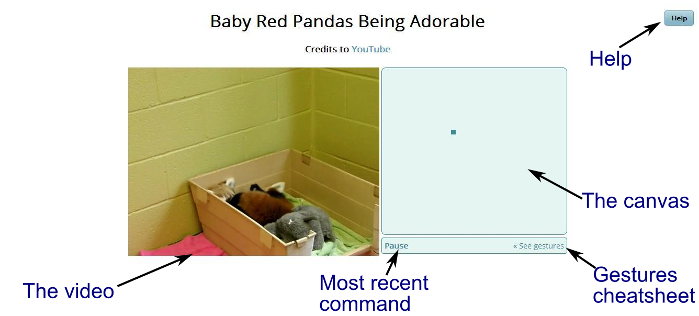Start at the dot and trace the shapes shown to create a command. To "erase" the old command, just start drawing the new one.
Remember: You can check out a "cheatsheet" of these commands directly from the video player by clicking "See gestures."
| Play/Pause: | Restart: | Volume up: | Volume down: | Mute/Unmute: |
| 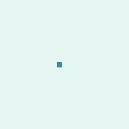 | 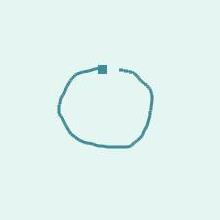 | 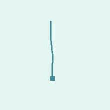 | 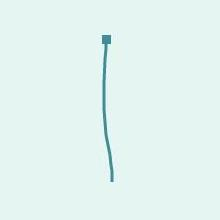 | 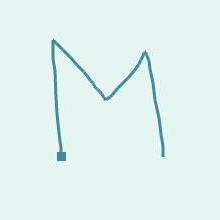 |
| +10 seconds: | -10 seconds: | +30 seconds: | -30 seconds: | |
| 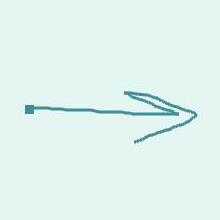 | 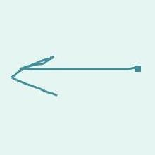 | 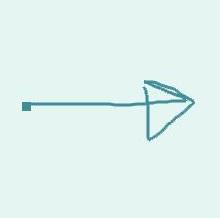 | 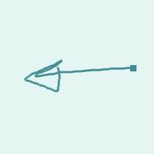 | |
| Increase playback rate: | Decrease playback rate: | Reset playback rate: | Resize bigger: | Resize smaller: |
| 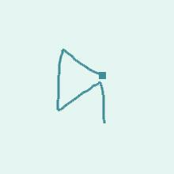 | 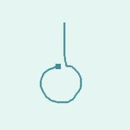 | 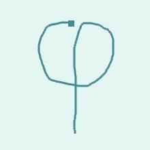 |
|
No gesture yet « See gestures
|
| Play/Pause: | Restart: | Volume up: | Volume down: | Mute/ Unmute: |
| +10 seconds: | -10 seconds: | +30 seconds: | -30 seconds: | |
| Increase playback rate: | Decrease playback rate: | Reset playback rate: | Resize bigger: | Resize smaller: |